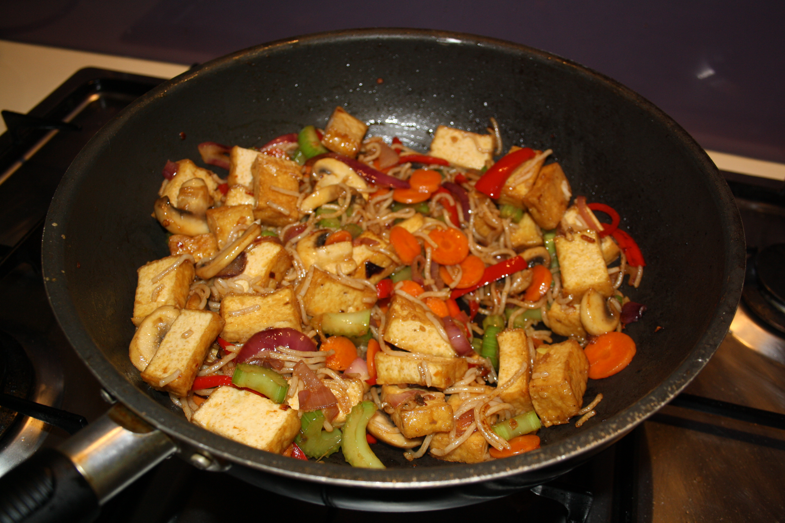

Stir Fry Recipe

This sizzling and spicy stiry fry will please every member of your family!
Ingredients
- 1 whole head of garlic, minced
- 1 medium onion, chopped
- 1 green bell pepper, sliced
- 1 red bell pepper, sliced
- approx. 2 c broccoli, chopped
- 2 inches ginger, minced
- 1/4 c soy saucepan
- 1 tbsp mirin sauce
- 1 tbsp pure maple syrup
- 1 tbsp rice wine vinegar
Steps
- Heat large frying pan or wok on medium high.
- Add 2 tbsp olive oil and wait 30 seconds.
- Add broccoli and peppers. Fry until slightly browned.
- Add onion, garlic, and ginger.
- While the vegetables fry, quickly mix in a small cup the remaining ingredients.
- Check condition of vegetables. They should still be firm, but well-browned. When they are nearly done, add contents of cup and stir pan quickly, scraping bottom of pan with spatula.
- Serve hot with rice or lo mein.